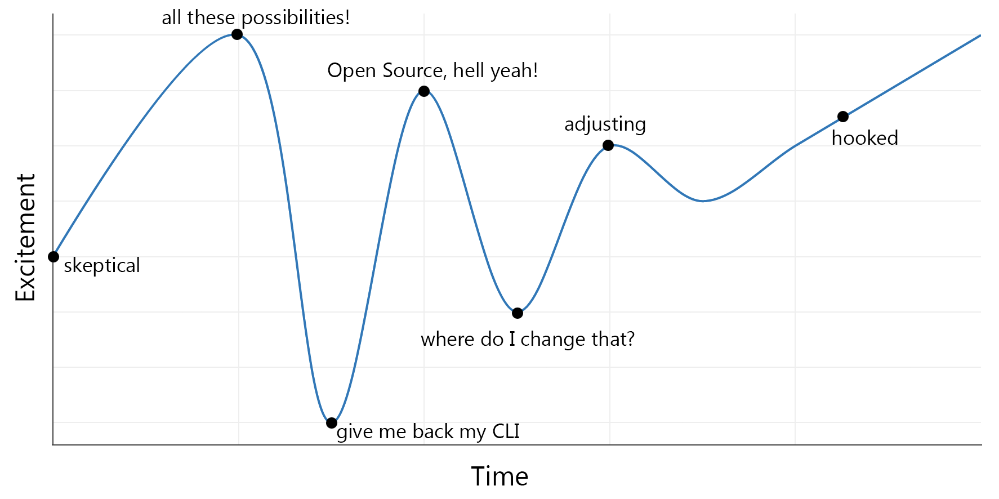

Before joining Microsoft a little over three months ago, I was not familiar with the Azure Cloud whatsoever and I replaced my Windows machine with an Apple MacBook several years ago without ever looking back. I have been a software engineer for the last 10 years, but when working in the cloud I have always developed in Amazon's AWS Cloud while working at various startups.
When I signed up to become a Technical Evangelist at Microsoft I knew this was about to change. I spent the last month and a half onboarding to Microsoft's Windows OS and Azure Cloud. Five years ago, I wouldn't have even considered joining MSFT, but due to Microsoft's new vision, focus on Cloud productivity and innovation I'm proud to call myself a Technical Evangelist at Microsoft.
In this blog I will be sharing my Azure onboarding experiences while trying to stay unbiased ;)
Excitement Graph
I think my ongoing journey can be described in a simple excitement-over-time graph shown below which I will try to explain in further detail in the remainder of this blog:

First impression
When I first opened the Azure Portal, the first thing I noticed is the extensive amount of options, items and resources I could pick from which felt really overwhelming.
AWS focuses on getting everything done via the Command Line Interface (CLI), whereas Azure tends to put more focus on its UI-based Web Portal. Even though the latter is nice for less experienced developers, it takes some getting used to.
Luckily Azure fully functions via the Command Line Interface as well (azure-cli), but does not seem to promote it in the way that Amazon does. Every tutorial/webinar/blog seems to use the Portal-approach and guide you through their code with various Portal screenshots. This is why it actually took me a couple of days before I found out there was a CLI :)
Every AWS service has its Azure counterpart
Yes, Every. It just takes some getting used to since they both use different naming conventions. A useful chart for me can be found here. AWS' EC2 and S3 can be found in Azure under respectively Virtual Machines and Azure Storages. And even more specific serverless functionality where e.g. AWS uses Lambda can be found in Azure under Azure Functions.
Microsoft embraces Open Source Software
The biggest concern I had when I joined Microsoft was that I had no .NET/C# experience whatsoever. A language and environment that have been going hand-in-hand with the Microsoft ecosystem. Fortunately, this does not hold me back in my productivity and programming capabilities at all in these days at Microsoft. The time where you could only run your code in sandboxed Windows Machines supporting solely ASP.NET with SQL server is over. Microsoft embraces every kind of programming and honestly does not care whether you are running a .NET application with SQL or a NodeJS application with MongoDB as a backend.
Historically, the path that Microsoft took is rather surprising. Especially when we look at a quote of Microsoft's former CEO Steve Ballmer in 2001:
"Linux is a cancer that attaches itself in an intellectual property sense to everything it touches"
Times sure have changed and even Ballmer seems to agree. At the time, Microsoft was fighting against the open source Linux community but as of lately actually embraces the whole OSS scene. Being the largest open source contributor on GitHub, SQL server running on Linux, Ubuntu running on Windows 10 and the list goes on. And it does result in some crazy setups which were unthinkable a couple of years ago:
Azure CTO, coding on a Mac, running in Docker, deploying to hw running Linux. Am I taking crazy pills? #DockerCon pic.twitter.com/qMCQxajBtd
— Andrew Bell (@recursive_chaos) June 21, 2016
Of course there are still scenarios where you wish you grew up in the MSFT ecosystem. One of the interesting companies that Microsoft acquired is Xamarin. Xamarin allows you to build cross platform mobile applications written in one programming language (instead of 3 different ones). Unfortunately, this is C# ;)
Amen to Azure SaaS
One thing that I was used to on Amazon's AWS cloud was setting up Virtual Machines to host my web services. Even though AWS fully supports PaaS services, I have never experimented with this. With Azure, the focus truly lies on PaaS and even SaaS and it's currently trying to win ground for IaaS solutions. That said, a frictionless migration is possible for all your VMs. Furthermore, Azure offers a lot of PaaS services, such as the App Service which automagically maintains, scales up/down and provides lots of insight for your web services.
Another great example of easy-to-use technology, are Microsoft Cognitive Services. This is an attempt to democratize the otherwise extremely complex AI and Machine Learning possibilities. Cognitive Services exposes simple APIs which developers can leverage to use extremely well-trained models to interpret & analyze images, audio and video. The nice thing about this, is that it does not require any hardcore developer to use these services. Anyone with little programming experience can leverage these models.
Some drawbacks
One of the things that bothered me a lot in the beginning is that the Azure Portal tends to be slow at times. I however later found out that this is because I am using an internal Microsoft subscriptions which is known to be less fast. Not just the interface felt slow, but I also feel that deploying new instances in Azure takes a bit longer than necessary imho. Deploying a cluster of Azure Container Services easily takes up to 20mins which I don't fully understand because all they need to do is copy over a bunch of images, right?
Another thing which I noticed is that Azure does suffer from occasional outages. Even though these outages usually only affect specific regions, I believe this isn't something that should still happen anno 2016.
Final thoughts
One big aspect which I do not consider in this blog, is the money aspect of it all which can be a really decisive argument for choosing a Cloud to build on.
Even more important is the actual cloud performance you are getting. Even though certain performance indicators are advertised, I have not analyzed whether both AWS and Azure live up to these standards.